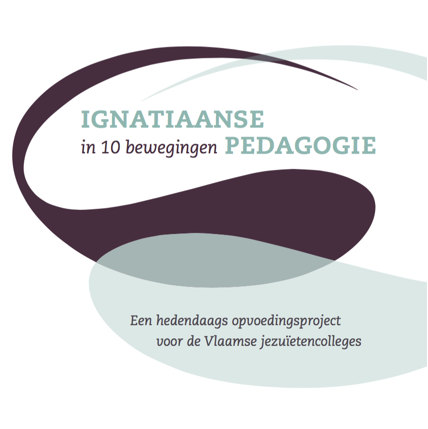

Opvoedingsproject
Opvoedingsproject in een notendop
Het opvoedingsproject van de Vlaamse jezuïetencolleges vertrekt van 10 werkwoorden of ‘bewegingen’. Zij drukken engagement en dynamiek uit en bieden een leidraad voor het pedagogisch handelen in de jezuïetencolleges. Deze bewegingen
zijn geworteld in het christelijk humanisme en in het charisma van Ignatius van Loyola (1491-1556) en vormen een aanzet om ook ons jezuïetencollege in het centrum van Brussel kleur te geven in de wereld van vandaag.

IGNATIAANSE PEDAGOGIE IN 10 BEWEGINGEN
- Vertrouwen geven. Inzetten op vrijheid en verantwoordelijkheid
- Zorg dragen voor leerlingen. ‘Cura personalis’
- Uitdagen tot meer. ‘Magis’
- Smaak geven. ‘Non multa sed multum’
- Reflecteren en kritisch kiezen. Onderscheiden
- De hele mens vormen. Bekwaam, bewust, bewogen
- Samen werken, samen leven. Eenheid in verscheidenheid
- Perspectieven openen. God zoeken in alle dinge
- Zorg dragen voor de wereld. ‘En todo amar y servir’
- Handelen in dankbaarheid. Terugblik